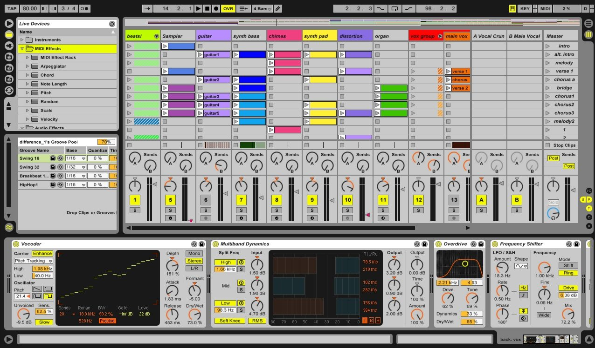

The Ableton Team Says: Thank You Live is the result of musicians wanting a better way to create, produce and perform music using a computer. A great deal of effort has been put into making Live easy and fun to use, yet at the same time capable of helping you create music with unlimited depth and sophistication. This effort continues even as you read these lines… in fact, a new, improved Live version might already be available for download! Please check your ableton.com account https://www.ableton.com/account/now, or choose the Check for Updates command from the Help menu.
We hope you enjoy using Live and that it enhances your creative process.
Your Ableton Team.
Ableton Live 11 is a music software that helps the producer edit music in ways unimaginable.
We wil discuss What's New in Live 11:
- Ableton Cloud
- Arrangement View Improvements
- Browser Improvements
- Capture Midi Updates
- Clip View Updates
Introduced Ableton Cloud (see ‘Using Ableton Cloud’), a service that sends Note Sets directly to Live’s browser, and across iOS devices.
In the Cloud tab of Live’s browser, the Date Modified column now appears as Cloud Modified.
The CPU meter (see ‘The CPU Load Meter’) drop-down menu now can be customized to display both the Average or Current CPU usage levels, only the Average level or only the Current level. Alternatively, the CPU meter can also be switched off entirely. By default, Live will not display the Current level; it must be enabled from the drop-down menu of the meter. The Overload Indicator (previously named the “Disk Overload” indicator) in the Control Bar has been redesigned, and will light up if a CPU overload has occurred. The Overload Indicator is disabled by default for new Live 11 installations. CPU overload notifications can be disabled in the Control Bar via the CPU Overload Indication entry in the Overload indicator’s context menu. Clicking on the new Show/Hide CPU Meter Section selector in the Session View’s Mixer Section will open a per-track CPU metering section. Each track shows a CPU meter with six rectangles that light up to indicate the relative impact of that track on the CPU level of the current Live Set.
The CPU meter (see ‘The CPU Load Meter’) drop-down menu now can be customized to display both the Average or Current CPU usage levels, only the Average level or only the Current level. Alternatively, the CPU meter can also be switched off entirely. By default, Live will not display the Current level; it must be enabled from the drop-down menu of the meter. The Overload Indicator (previously named the “Disk Overload” indicator) in the Control Bar has been redesigned, and will light up if a CPU overload has occurred. The Overload Indicator is disabled by default for new Live 11 installations. CPU overload notifications can be disabled in the Control Bar via the CPU Overload Indication entry in the Overload indicator’s context menu. Clicking on the new Show/Hide CPU Meter Section selector in the Session View’s Mixer Section will open a per-track CPU metering section. Each track shows a CPU meter with six rectangles that light up to indicate the relative impact of that track on the CPU level of the current Live Set.
 A new Create Crossfades On Clip Edges command creates four-millisecond crossfades on clip edges. The command is available in the Create menu, and the context menu of Arrangement clips, or via the CTRL-ALT-F(Win) / CMD-ALT-F(Mac) keyboard shortcut. It is possible to change the selection of automation and take lane headers using the up and down arrow keys. The lane header selection can also be extended using Shift and the up and down arrow keys. You can move automation lanes and take lanes using CTRL(Win) / CMD(Mac) and the up and down arrow keys.
Selected automation lanes or take lanes can be resized vertically by pressing ALT-+ or ALT--, or by pressing ALT while using the mousewheel/pinch gesture.
A new Create Crossfades On Clip Edges command creates four-millisecond crossfades on clip edges. The command is available in the Create menu, and the context menu of Arrangement clips, or via the CTRL-ALT-F(Win) / CMD-ALT-F(Mac) keyboard shortcut. It is possible to change the selection of automation and take lane headers using the up and down arrow keys. The lane header selection can also be extended using Shift and the up and down arrow keys. You can move automation lanes and take lanes using CTRL(Win) / CMD(Mac) and the up and down arrow keys. A new Create Crossfades On Clip Edges command creates four-millisecond crossfades on clip edges. The command is available in the Create menu, and the context menu of Arrangement clips, or via the CTRL-ALT-F(Win) / CMD-ALT-F(Mac) keyboard shortcut. It is possible to change the selection of automation and take lane headers using the up and down arrow keys. The lane header selection can also be extended using Shift and the up and down arrow keys. You can move automation lanes and take lanes using CTRL(Win) / CMD(Mac) and the up and down arrow keys.
A new Create Crossfades On Clip Edges command creates four-millisecond crossfades on clip edges. The command is available in the Create menu, and the context menu of Arrangement clips, or via the CTRL-ALT-F(Win) / CMD-ALT-F(Mac) keyboard shortcut. It is possible to change the selection of automation and take lane headers using the up and down arrow keys. The lane header selection can also be extended using Shift and the up and down arrow keys. You can move automation lanes and take lanes using CTRL(Win) / CMD(Mac) and the up and down arrow keys. A new Create Crossfades On Clip Edges command creates four-millisecond crossfades on clip edges. The command is available in the Create menu, and the context menu of Arrangement clips, or via the CTRL-ALT-F(Win) / CMD-ALT-F(Mac) keyboard shortcut. It is possible to change the selection of automation and take lane headers using the up and down arrow keys. The lane header selection can also be extended using Shift and the up and down arrow keys. You can move automation lanes and take lanes using CTRL(Win) / CMD(Mac) and the up and down arrow keys.
A Templates label (see ‘Template Sets’) has been added to the browser’s Categories. It shows template Live Sets from factory packs (including the Core Library), the User Library, and other Project folders. A Grooves label (see ‘Using Grooves’) has also been added. It shows a flat list of all Grooves from the Core Library as well as the User Library. Devices in the Audio Effects label are now grouped into folders. You can unfold more than one folder at once by holding CTRL(Win) / CMD(Mac). Ableton’s official Max for Live devices are now listed within the Audio Effects, MIDI Effects, and Instruments labels. The browser receives focus when opened via the CTRL-ALT-B(Win) / CMD-ALT-B (Mac) keyboard shortcut. When viewing and expanding Live Sets in the browser, you will see a new Devices icon for device chains on a track that contain at least one device.
A Templates label (see ‘Template Sets’) has been added to the browser’s Categories. It shows template Live Sets from factory packs (including the Core Library), the User Library, and other Project folders. A Grooves label (see ‘Using Grooves’) has also been added. It shows a flat list of all Grooves from the Core Library as well as the User Library. Devices in the Audio Effects label are now grouped into folders. You can unfold more than one folder at once by holding CTRL(Win) / CMD(Mac). Ableton’s official Max for Live devices are now listed within the Audio Effects, MIDI Effects, and Instruments labels. The browser receives focus when opened via the CTRL-ALT-B(Win) / CMD-ALT-B (Mac) keyboard shortcut. When viewing and expanding Live Sets in the browser, you will see a new Devices icon for device chains on a track that contain at least one device.
Added MPE to Capture MIDI. In the first captured MIDI clip (in an empty set with the transport stopped), if the detected loop is eight bars or less, the first played note is considered the start of the loop.When only one note is played in the first captured MIDI clip (in an empty set with the transport stopped), the loop boundaries are set to the note start and end, and the tempo is accordingly calculated, resulting in a one, two, four, or eight bar loop. This is particularly useful when playing a rhythmical sample with a single MIDI note. In Session View, new captured clips now use the Adaptive Grid: Narrow setting instead of Fixed Grid: 1/16.
Capture MIDI results are no longer influenced by the song tempo set by the target track’s previous Capture attempts.
When Live’s transport is running, Capture MIDI will keep longer phrases in captured clips.
Added MPE to Capture MIDI. In the first captured MIDI clip (in an empty set with the transport stopped), if the detected loop is eight bars or less, the first played note is considered the start of the loop.When only one note is played in the first captured MIDI clip (in an empty set with the transport stopped), the loop boundaries are set to the note start and end, and the tempo is accordingly calculated, resulting in a one, two, four, or eight bar loop. This is particularly useful when playing a rhythmical sample with a single MIDI note. In Session View, new captured clips now use the Adaptive Grid: Narrow setting instead of Fixed Grid: 1/16.
Added MPE to Capture MIDI. In the first captured MIDI clip (in an empty set with the transport stopped), if the detected loop is eight bars or less, the first played note is considered the start of the loop.When only one note is played in the first captured MIDI clip (in an empty set with the transport stopped), the loop boundaries are set to the note start and end, and the tempo is accordingly calculated, resulting in a one, two, four, or eight bar loop. This is particularly useful when playing a rhythmical sample with a single MIDI note. In Session View, new captured clips now use the Adaptive Grid: Narrow setting instead of Fixed Grid: 1/16.
Live now makes better use of screen space when editing clips.Clip View properties (see ‘The Clip Tabs/Panels’) can be arranged vertically by moving the mouse cursor to the left from the Clip View panel edge next to the Sample Editor/MIDI Note Editor. Clip View properties can also be arranged automatically, which switches between the horizontal and vertical views depending on the height of the Clip View area. Select “Arrange Clip View Panels Automatically” from the View menu to enable this option. Pressing ALT-1 switches to the Audio/Notes tab, pressing ALT-2 switches to the Envelopes tab, and, when a MIDI clip is selected, pressing ALT3 switches to the Note Expression tab. The Pitch control now has a dial control for transposing in semitones, and a text slider control for fine-tune in cents (previously named Transpose/Detune). Clip Volume is now called Clip Gain in the Envelope tab’s Device/Control choosers, and in the undo history. The Audio tab’s Clip Gain control has been changed back to a vertical slider, and it has been repositioned above the Transpose controls. The Audio tab’s Reverse button now shows an icon instead of text. The Reverse and Edit buttons are now positioned next to each other. When multiple audio clips with different Clip Gain values are selected, the value range is shown with split triangle handles on the Clip Gain slider.
Live now makes better use of screen space when editing clips.Clip View properties (see ‘The Clip Tabs/Panels’) can be arranged vertically by moving the mouse cursor to the left from the Clip View panel edge next to the Sample Editor/MIDI Note Editor. Clip View properties can also be arranged automatically, which switches between the horizontal and vertical views depending on the height of the Clip View area. Select “Arrange Clip View Panels Automatically” from the View menu to enable this option. Pressing ALT-1 switches to the Audio/Notes tab, pressing ALT-2 switches to the Envelopes tab, and, when a MIDI clip is selected, pressing ALT3 switches to the Note Expression tab. The Pitch control now has a dial control for transposing in semitones, and a text slider control for fine-tune in cents (previously named Transpose/Detune). Clip Volume is now called Clip Gain in the Envelope tab’s Device/Control choosers, and in the undo history. The Audio tab’s Clip Gain control has been changed back to a vertical slider, and it has been repositioned above the Transpose controls. The Audio tab’s Reverse button now shows an icon instead of text. The Reverse and Edit buttons are now positioned next to each other. When multiple audio clips with different Clip Gain values are selected, the value range is shown with split triangle handles on the Clip Gain slider.